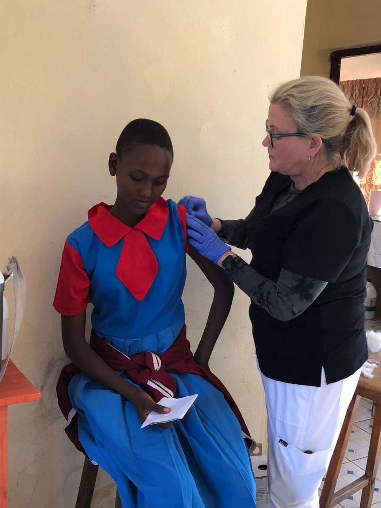
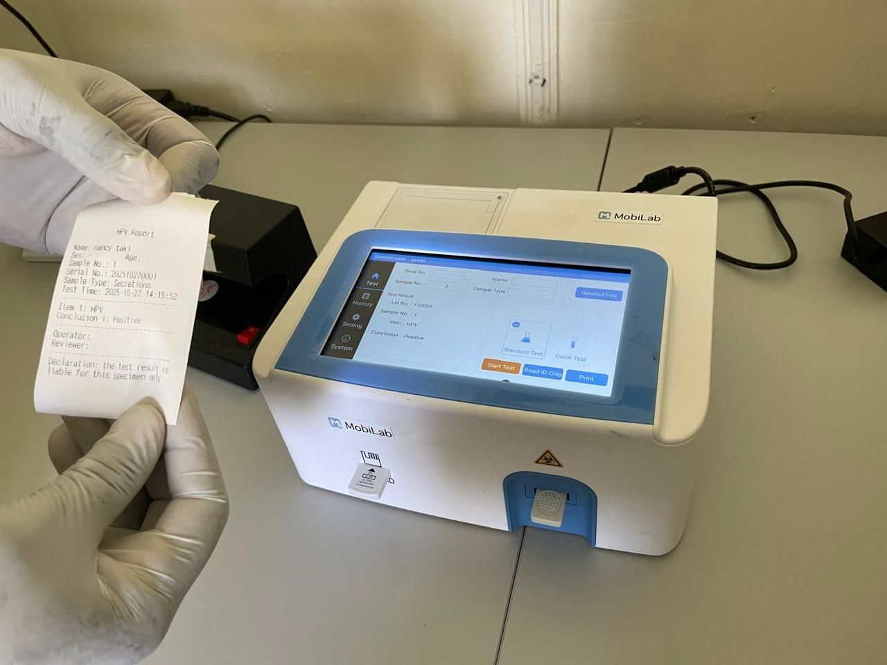
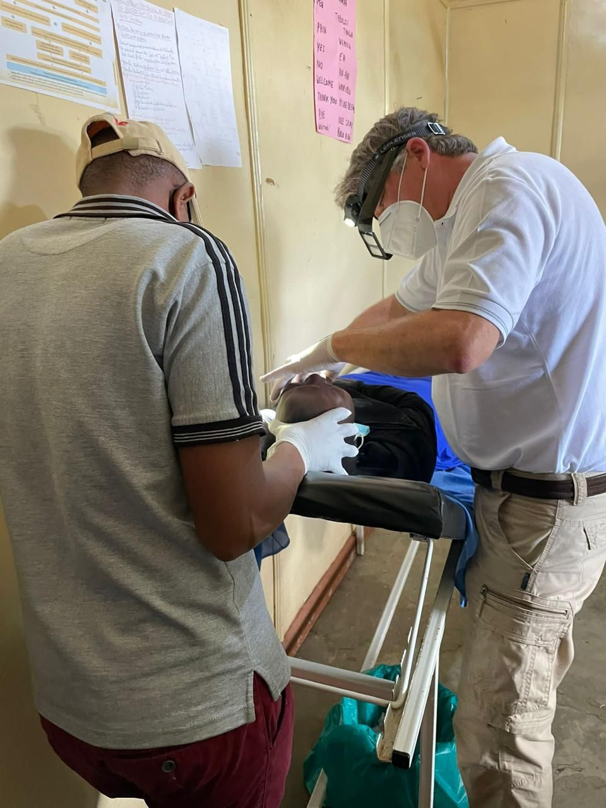
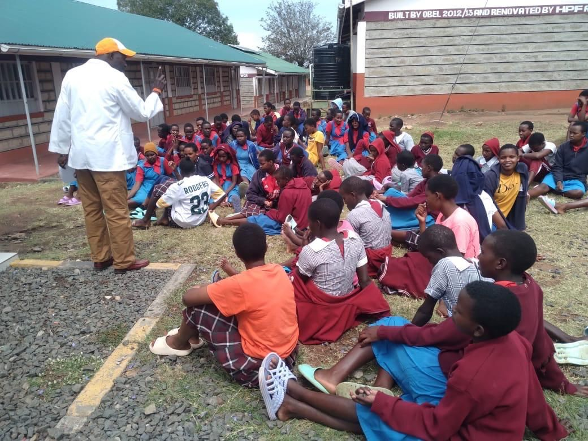

Home / Services
Our services.
Free HPV screening, same-day treatment and honest education for women aged 20 and above — delivered by a mobile clinic that comes to you.
HPV vaccination
The HPV vaccine protects against the virus that causes almost all cervical cancer. It is most effective for girls aged 9–14, before any exposure to the virus — but all women of reproductive age are encouraged to be vaccinated.

Accessible screening services
We bring screening directly to women, using the rapid HPV E6/E7 Oncoprotein test so that results are ready at the point of care.
- Who we target: women aged 20 and above, including sex workers (confidential resources).
- Linkage: positive results are linked to treatment or further investigation.
- Mobile clinic: point-of-care screening with the HPV E6/E7 Oncoprotein test, and same-day treatment.

Free colposcopy & same-day treatment
When a result needs a closer look, we offer colposcopy free of charge. Where treatment is needed it is done the same day, and women who need more advanced care are linked onward.

Community education & breaking stigma
We hold community conversations with women’s groups, elders and leaders to bust myths about HPV and cervical cancer, and to replace silence and shame with facts and options.

Beyond the clinic.
- Partnerships & linkages — working with hospitals, laboratories and professional societies so that women can be referred smoothly.
- Socio-economic empowerment — connecting women with partner organisations that offer skills training and support groups.
Where we work.
Call or WhatsApp +254 726 619 362 to find out when we are next at a site near you.
- Screening site 1
Ngiro Talek Health Centre
Point-of-care HPV screening and same-day treatment.
- Screening site 2
Mara Rianta
Point-of-care HPV screening and same-day treatment.
- Screening site 3
Aitong Health Centre
Point-of-care HPV screening and same-day treatment.
- Screening site 4
Guardian Hospital
Point-of-care HPV screening and same-day treatment.
Ready to be screened? It’s private.
Call, WhatsApp or send us a message and we will tell you where and when to find us.